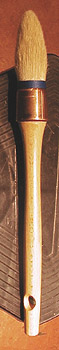
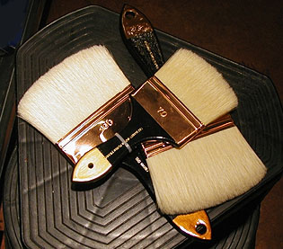
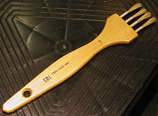
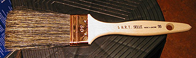
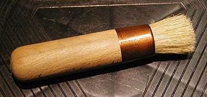

Pinceaux : formes et tailles
La forme dont nous parlons ici est avant tout définie
par celle de la tranche de la virole
: plate ou ronde. Au-delà, il existe d'autres catégories qui se définissent
par la forme de la sortie :
* les
ronds
pointus. Leur virole est ronde mais leur sortie peut être
moyennement longue ou bien courte pour exécuter des tracés détaillés.

* les
mouilleurs. Ce sont des ronds pointus d'un
type un peu particulier. De forme rebondie, ils ont une réserve
inégalable. Le poil est du petit-gris
éventuellement mélangé à du poney,
beaucoup moins cher.
- Il existe des mouilleurs ovales dont la
destination n'est pas de faire la pointe mais juste de stocker un maximum de
liquide.
* les ronds arrondis. Une
dénomination qui peut
surprendre. Cependant, elle désigne bien une catégorie précise de pinceaux
: la virole est ronde, la sortie n'est pas pointue mais arrondie. Cette
forme est assez utilisée en peinture décorative, mais pas exclusivement.
Elle incite au frottis.
* les plats carrés ou
"plats courts". Les sorties sont
effectivement de forme plus ou moins carrée. A cause de leur étroitesse, ils incitent naturellement
à brosser au lieu de poser (voir article),
surtout chez les débutants.
* les plats carrés longs
ou "plats longs". Leur sortie est nettement rectangulaire (il s'agit
approximativement d'un double carré). Leur réserve est supérieure à
celle des plats courts. Ils ressemblent aux queues de
morues mais sont souvent moins larges et proportionnellement moins
longs.
*
les brosses à
rechampir. Rondes (voir photo ci-contre à gauche) et allongées,
elles "accrochent" aux parois à rechampir.
Solides, elles sont en soie de porc.

* les spalters
et queues de morues (voir photo ci-contre à droite).
* les "usés bombés" ou "langues
de chat". Ils sont assemblés de sorte à ressembler à un plat carré
ou long qui aurait été usé sur les bords. Incitant à poser plus qu'à
brosser, ils ont une valeur pédagogique certaine comparativement aux
sorties carrées.
* les
éventails. Ils sont assemblés sur une
virole plate d'aspect plus ou moins triangulaire. Le poil est tantôt de la
mangouste, tantôt du blaireau, tantôt du synthétique. Cette forme
autorise certains types d'applications particulières, notamment pour
réaliser des marbrures ou pour des techniques particulières à base de poudre de
pastels secs.
* les plats biseautés. Ils sont surtout employés
en peinture décorative.

*
les sorties
multiples (voir photo ci-contre à gauche). Elles sont destinées au chiquetis
et aux peintures décoratives (faux bois, faux marbre, etc.). Le poil est le plus souvent du poney,
parfois de la soie de porc.
* les brosses à filet, dites aussi
"traceurs". Rondes, leurs sorties sont très longues. Elles sont
employées surtout en peinture décorative, notamment pour les faux marbres
(tracé des veines du marbre), mais pas exclusivement.
* les brosses à adoucir. Elles sont utilisées notamment en peinture
décorative. Leur rôle est d'étaler la peinture et surtout d'effacer les
traces des coups de brosse dans un glacis à l'huile frais. Le poil est très
fin, la forme est celle d'un plat
court fort large.
*
les brosses à veiner, dite aussi veinettes ou brosses à lisser
(voir ci-contre). Sortes de queues de morue à la sortie
hypertrophiée et au poil très épais, elles permettent d'imprimer, par retrait dans
une matière épaisse, des veinures
droites ou galbées lors de la réalisation de faux bois. Voir Le
veiné et Le peigne.
* les pinceaux pour la
calligraphie chinoise. Il en existe de différentes sortes. Les plus courants sont
en poil de chèvre. Le prix de ceux-ci ne devrait pas être élevé car ils ont
une tendance particulièrement prononcée à perdre leurs poils. En
conséquence, les prix proposés sous certaines enseignes en France sont
nettement disproportionnés. Ils n'ont pas de virole métallique (bois) et sont
très fragiles, cassant à la moindre chute. Ils ont un peu la forme des mouilleurs : pointus avec une
grande réserve.
* les pinceaux en mousse
synthétique. Substituts des queues de morue,
leur mousse doit être assez fine pour justifier leur préférence par
rapport à la soie de porc. Ils sont employés en peinture décorative et
parfois aussi pour les "loisirs créatifs". Ils ne sont pas très
faciles à nettoyer, comme toutes les mousses.
* les pinceaux pour putoiser. En blaireau, en putois, en petit-gris, de
formes finalement assez variées, ces outils sont consacrés à des domaines
particuliers : porcelaine, céramique, vitrail. Lire l'article putoiser.
*
les brosses à pochoirs. Utilisées
aussi par les pastellistes, elles sont en soie de
porc. Leur forme est tronquée (voir photo ci-contre à droite). Elle autorise
un moucheté sur des surfaces réduites. Lire
l'article sur le pochoir.
Les tailles
Elles sont référencées
* par des numéros. D'un
fabricant, d'un poil, d'une forme à l'autre, les numérotations diffèrent
vraiment radicalement. Ce qui permet d'identifier
absolument un pinceau, c'est le nom du fabricant et un code de 3 ou 4
chiffres (ou une appellation très précise, comme "Kevrin plat
court") identifiant à la fois le poil et la forme, suivi d'un numéro
précisant la taille.
* ou par des dimensions réelles exprimées en
millimètres. C'est le cas des spalters et des queues
de morue.
Pinceau ou brosse ?
La distinction entre ces deux termes n'est pas très clairement
établie. Très souvent, les peintres parlent de brosses lorsqu'ils utilisent
des pinceaux à manche long ou à poil dur (soie) ou à sortie carrée ou
courte. Le terme de pinceau désigne plus spécifiquement les brosses à manche
court ou à poil mou (petit-gris). La définition la plus pertinente de la
brosse est peut-être liée à la dureté du poil, permettant vraiment l'action
de brosser.
Longueur
du manche
La distinction manche court / manche long est
beaucoup plus déterminante : le manche long autorise la peinture de chevalet et
interdit quasiment la peinture sur support horizontal (gare aux yeux !). Il faut
garder à l'esprit le fait qu'il est très facile de transformer un manche long
en manche court mais que le contraire est impossible.
Retour
début de page